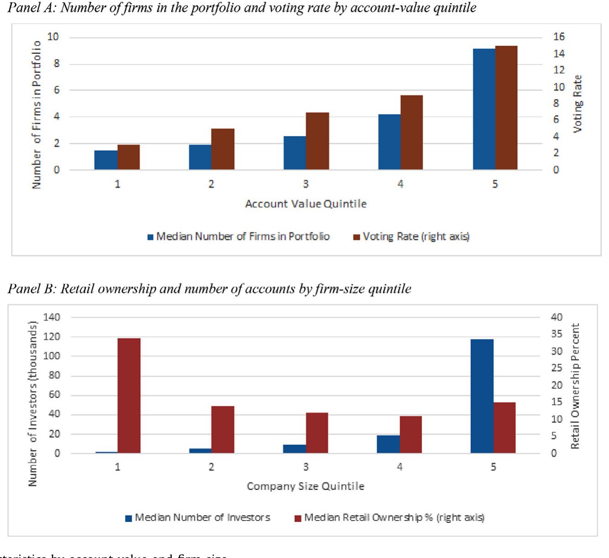
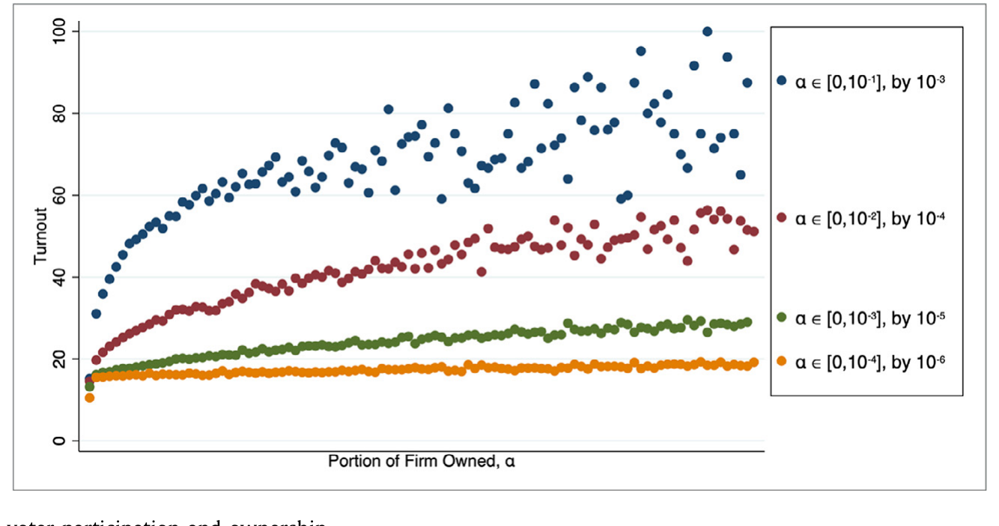
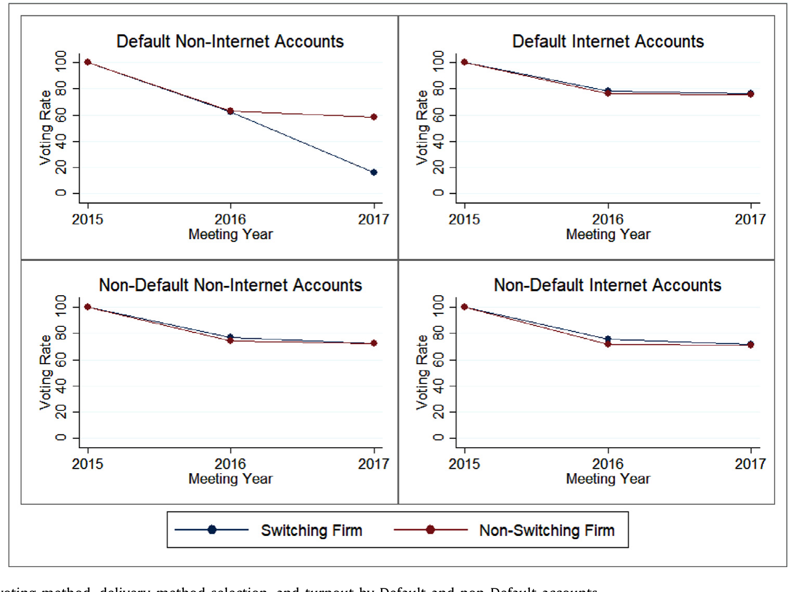
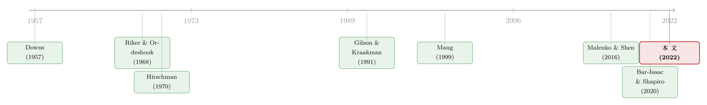

散户其实在「投票」，只是我们一直假设他们不在乎
本文读的是 Brav, Cain & Zytnick (2022, Journal of Financial Economics)：他们拿到一份几乎覆盖全美的散户持股与投票记录，证明散户并非「无所谓」的一群人——他们的参投决策严丝合缝地服从政治学里那条经典的「理性投票」公式，参与率随持股、随胜选收益上升，随投票成本下降；而且一旦投票，他们会惩罚业绩差的管理层。换句话说，散户在用手里那点选票，安静地监督着公司。
1 一个被默认「不投票」的群体
公司治理研究有一条几乎是公理的出发点：股东的集体行动困境（collective-action problem）。逻辑很简单——一家公司由成千上万个分散的小股东持有，每个人只占万分之一、十万分之一的股份，谁也没有动力去花时间读年报、研究议案、再跑去投一张几乎不可能改变结局的票。于是研究者把目光投向那些「被雇来替别人操心的人」：先是管理层和董事会，再到近几十年崛起的机构投资者。机构怎么投票，已经被研究了个底朝天；可真正自己掏钱、为自己账户持股的散户（retail shareholder），他们到底投不投票、怎么投票，几乎是一片空白。
为什么空白？一部分是数据问题——散户的投票记录极难拿到；另一部分则是先验偏见：大家默认散户根本不参与。Maug (1999)、Edelman et al. (2019) 这些模型里，干脆假设小股东「随机投票」；而坊间的印象（Stewart, 2012；Chasan, 2013）是，散户就算投，也一律跟着管理层投。问题在于——从来没有人真正用数据检验过这些假设。
这篇论文做的，正是这件被搁置了很久的事。三位作者从 Broadridge（替绝大多数美国上市公司处理代理投票「管道」的那家公司）拿到一份 2015–2017 三年、几乎覆盖全部常规与特别股东大会的散户持股与投票数据，第一次把散户的「参投」和「投票选择」两个决策，摊开在显微镜下。
而他们手里有一件别人没有的武器：散户是自愿投票的。机构因为受托责任，实际上被强制投票（投了才算尽职），所以你从机构数据里看不到「要不要参与」这个决策——它恒等于「参与」。散户不一样，参与与否完全是自选择的。这让散户成了检验「理性投票」理论的一块绝佳试验田。
全文真正的「一个核心」其实就一句话：把政治学里研究选民投票的那套框架，原封不动地搬到股东大会，看它对不对。 后面所有的结果，都是在围绕这一句话反复验证。
2 一个借自政治学的框架
要理解这篇论文，得先回到政治学里那个被称为「投票悖论（paradox of voting）」的老问题。Riker 与 Ordeshook (1968) 给出过一个刻画选民参与决策的效用函数，作者几乎一字不改地把它搬了过来：
一个理性的人，当且仅当 \(U > 0\) 时才会去投票。
这个公式的魔鬼之处在于 \(P\)。在一场有成千上万张选票的选举里，你这一票恰好是决定胜负的那一票的概率 \(P\) 小到可以忽略。于是 Downs (1957) 指出：哪怕投票成本 \(C\) 极小，只要 \(D=0\)，那么为了让人愿意投票，胜选收益 \(B\) 就得高到不切实际的程度——可现实里偏偏一大堆人去投了票。这就是「悖论」。
现在把它翻译到股东大会。设这个账户持有公司份额为 \(\alpha\)。那么：
$$ P = P(\alpha), \qquad \frac{\partial P}{\partial \alpha} > 0 $$
持股越多，你越可能是那张关键票。而胜选收益 \(B\) 可以拆成两块——财务收益与社会收益：
$$ B = \underbrace{\alpha \times b_f}_{\text{financial}} \;+\; \underbrace{(\text{social benefit if weighted})}_{\text{non-financial}} $$
其中 \(b_f\) 是「赢下议案」给整个公司带来的美元价值，乘上你的份额 \(\alpha\)，就是落到你头上的那部分。
这个拆解一下子打开了三扇可检验的门：
- 首先，因为同一家公司里不同账户的 \(\alpha\) 差异巨大，同一个账户在不同持仓公司里的 \(\alpha\) 也差异巨大，作者就有了双重变异去识别 \(P\) 和 \(B\) 与参与率的关系——这是政治学数据给不了的奢侈。
- 接着，一个自然的问题是：\(D\) 到底存不存在？如果连 \(\alpha\) 小到关键票概率几乎为零的账户都还在投票，那剩下的只能用 \(D\)（消费型效用）解释。
- 然后，公式对「参与」给了预测，但对「怎么投」没有给——所以作者把「参投」和「投票选择」分成两步走。
注意作者自己也承认（脚注里写得很老实）：Eq. (1) 对「参与率随 \(\alpha\) 的形状」以及「\(\alpha\) 与 \(b_f\) 的交互」没有清晰的理论预测，因为这取决于 \(P\) 如何随 \(\alpha\) 变化、以及美元收益如何转化为效用。所以这是一个框架，不是一个能算出点估计的结构模型——他们做的是「检验这个框架的基本结构对不对」，而不是「估计某个参数」。这一点对后面评判识别很重要。
3 识别策略：拿什么去「代理」P、B、C
既然 \(P\)、\(B\)、\(C\) 都不可直接观测，全文的功夫就花在找代理变量上：
- 代理 \(P\) 与 \(B\)（胜选收益）：用持股份额 \(\alpha\)、账户持仓的美元价值、公司是否表现不佳（低估值、低盈利、差股价）、以及是否是特别股东大会（special meeting）。特别大会往往涉及并购、章程修改这类高利害事项，是 \(B\) 上升的天然代理。
- 代理 \(C\)（成本）：最巧妙的一招。Broadridge 的数据能看到账户被分配到的默认投票/送达方式——有的账户能用它偏好的方式（比如纸质票或某个在线平台）投票，有的则被限制，必须跳到另一个网站才能投。这种对「偏好投票方式」的限制，就是 \(C\) 的外生上升。
- 代理 \(D\)（消费型效用）：把账户所在县（county）的政治选举投票率接到散户的股东大会参与率上。如果一个住在「爱投票的县」的人，在股东大会上也更爱投票，而这种相关又没法用财务收益解释，那它就是 \(D\) 存在的证据。
第三招值得多说一句。它的妙处在于：县级政治投票率与你某一只股票的财务收益没有任何机制上的联系，所以它能把「公民责任感/表达型动机」这部分干净地剥出来。
4 数据
数据来自 Broadridge Financial Solutions（在保密协议下提供），覆盖 2015–2017 三年里几乎所有的常规与特别股东大会。观测单位细到账户 × 公司 × 会议。
几个值得记住的制度背景数字：美国大约 75%–80% 的上市公司股份是以「受益所有（beneficial / 街名持有）」形式、通过券商托管账户持有的（Racanelli, 2018）；散户正是藏在这一层里。
先看一组描述性事实，它本身就很有冲击力：散户合计持股并不小，平均占公司流通股的 26%；但这个比例随公司规模单调下降——从最小规模五分位的 38% 一路掉到最大规模五分位的 16%。与此同时，散户账户数量却随公司规模急剧上升：最大五分位的公司平均被超过 25 万个散户账户持有。也就是说，大公司里散户「人多但每人份额小」，小公司里散户「人少但每人份额大」——这恰好为后面识别 \(\alpha\) 的作用提供了横截面变异。

Figure 1: Ownership characteristics by account value and firm size
5 主要结果：散户在「按公式办事」
第一步，参投决策完全符合 Eq. (1)。 参与率随持股份额 \(\alpha\) 上升、随胜选收益代理（公司表现差、特别大会）上升，且这种上升在持股份额大时更明显——也就是 \(\alpha\) 与 \(b_f\) 的交互为正。反过来，当散户被限制使用其偏好的投票方式（\(C\) 上升）时，参与率显著下降。三个组成部分各就各位。下图把这条核心关系画得很直白：参与率随持股份额单调抬升。

Figure 2: Relation between voter participation and ownership
接着，一个自然的问题是：那 \(D\) 呢？作者发现，即便是持股极小、关键票概率几乎为零的账户，参与率也并非零。更关键的是，账户所在县的政治投票率越高，这个账户的股东大会参与率也越高——而这是财务收益无论如何解释不了的。这就为「消费型投票动机」提供了直接证据：散户去投票，部分是出于一种「想表达、想参与」的非财务动机。
而成本这一侧，作者用默认账户做了一个干净的对照：能用偏好方式投票的账户，参与率明显更高。把投票方式、送达方式与默认/非默认账户的参与率放在一起，成本对参与的压制一目了然。

Figure 4: Account voting method, delivery-method selection, and turnout by Default and non-Default accounts
然后，真正关键的一步在于「条件投票选择」。 参与只是故事的一半；散户投了票，又投给了谁？作者的发现颠覆了「散户一律挺管理层」的刻板印象：
一旦参投，散户会惩罚业绩差的公司的管理层。 在低估值、低盈利、股价表现差的公司里，散户更倾向于投反对票。
与此同时还有一个看似矛盾、实则自洽的结果：散户对自己持股份额更大的那些公司的管理层，反而更支持。作者的解释是「自选择」——人们会主动选择那些自己认可其管理团队的公司去重仓。这一点和散户「按偏好挑栖息地」的行为一脉相承（关于散户如何系统性地选择自己的投资habitat，可参见《散户的栖息地：他们不是更笨，只是去了别人不愿去的地方》）。
于是反转出现在「退出（exit）」上。 Hirschman (1970) 的经典框架说股东有两种武器：用脚投票（exit）和用嘴说话（voice）。作者发现散户两样都用，而且有先后：他们倾向于先投反对票、再卖出离场，尤其是在董事选举里。把董事议案与其他议案对比，董事提案预测「随后退出」的能力强得惊人——相对股东提案、薪酬投票（say-on-pay）、其他管理层提案，差异的 F 统计量分别高达 25.1、16.9、31.0，全部高度显著。这与 Li et al. (2021) 关于共同基金在股东大会后调仓的发现遥相呼应：投票与交易，本就是相互交织的两个决策。
几个进一步的对照，让画面更完整：
- 对比机构。 作者把同期机构投票数据接进来，做了一组「反事实」：如果把势均力敌的近距离选举里散户的投票改成像别的投票群体那样投，结果会怎样？答案是——管理层提案更容易被否、股东提案更容易通过，而且改动散户票造成的结果翻转频率，与改动「三巨头（Big Three）」机构票的频率相当。散户作为一个整体，投票方式系统性地不同于机构。
- 对 ISS 的敏感度。 散户的投票与代理顾问（proxy advisor，如 ISS）的建议确实正相关，说明两者共享了某些信息；但散户对 ISS 建议的敏感度远低于机构。而且——这一点很要命——大账户散户对 ISS 的敏感度，和小账户散户接近，而不是和同等规模的机构接近。如果差异源于「有钱人买得起更好的信息」，那大散户本该更像机构；事实并非如此。这就把「信息获取差异」作为解释排除掉了一大块。
- ESG 的异质性。 散户整体上对环境、社会（E&S）类股东提案的支持不及机构；但这个「整体」掩盖了剧烈的内部分化：大持股散户对 E&S 提案的支持低于机构，而小持股散户对 E&S 提案的支持反而高于机构。一句「散户不支持 ESG」是讲不清楚的。
把这些串起来，论文落到一个朴素却有力的结论上：散户不是治理里的「死票」。 他们在最需要监督的时候（公司表现差、利害重大的特别大会）最可能现身投票，他们的票被公司的真实处境所塑造，他们会先用嘴、再用脚。这对那场「该不该削弱机构中介投票权、把权力还给散户」的争论（Lund, 2018；Griffith, 2020；Hart & Zingales, 2017）提供了第一手的经验参照：如果真把权力还给散户，投票会变成什么样——这篇论文给了一个具体的样本。
顺便一提，散户「在管理层表现差时才出手监督」的逻辑，本质上是 Jensen 那套「监督管理层、约束代理成本」的微观版本。关于监督与代理成本的源头，可参见《现金为什么一定要「还」出去？——四十年后，重读 Jensen 的自由现金流》。
6 文献脉络
这条研究的根，扎在政治学而非金融学。Downs (1957) 把投票放进理性选择的框架，抛出了「投票悖论」；Riker & Ordeshook (1968) 给出 \(U = P \times B - C + D\) 这个被沿用至今的「投票的算计」。这套东西在政治学里被反复检验了半个多世纪（Geys, 2006；Blais, 2006）。

金融学这一侧，主线长期是机构投票。Gilson & Kraakman (1991)、Black (1992) 把机构监督当作集体行动困境的解药；2003 年共同基金强制披露投票后，机构投票研究井喷（Davis & Kim, 2007；Matvos & Ostrovsky, 2008, 2010；Iliev & Lowry, 2015；Malenko & Shen, 2016 用断点回归识别代理顾问的因果影响）。理论上，Maug (1999) 研究代理投票的有效性，Bar-Isaac & Shapiro (2020) 研究大股东投票，Zachariadis et al. (2020) 把政治学的参与模型搬进股东大会。
而散户投票几乎是空白的一角：Van der Elst (2011) 在欧洲、Schmidt (2017) 在单家德国公司、Kastiel & Nili (2016) 在美国做了零星描述，但都受限于数据。这篇 Brav, Cain & Zytnick (2022) 的位置，正是把政治学那条成熟的理性投票脉络，第一次用一份近乎全样本的美国散户数据，系统地嫁接到公司治理上——既补上了散户这块拼图，也给「机构 vs 散户」的对照提供了基准。
7 评论与延伸（Q&A + 研究方向）
(a) 几个可能的疑问
Q：把政治选举的框架搬到股东大会，会不会本身就是一种过度类比？
作者其实很清醒。他们没有声称 Eq. (1) 是「真模型」，只是检验它的基本结构对不对——\(P\)、\(B\)、\(C\) 的代理变量是否各自朝预测的方向移动。脚注里他们明说该框架对「参与率随 \(\alpha\) 的形状」和「\(\alpha \times b_f\) 交互」没有清晰预测。所以这是一个可证伪的描述性框架，而非结构估计。当作「散户行为是否符合理性投票的定性预测」来读，类比是站得住的。
Q：\(D\)（消费型动机）的证据，靠县级政治投票率，可信吗？会不会只是「住在某种社区的人恰好也买某类股票」？
这是最值得担心的地方。县级政治投票率与个人特征（教育、收入、年龄）高度相关，而这些又可能通过财务渠道影响投票。作者的辩护是：这种相关「无法被财务收益的变异轻易解释」。但严格说，这是相关证据而非因果证据——一个更干净的设计需要在控制住账户财富、持仓后，仍能分离出「公民责任」这一维度。我会把它读作「\(D\) 很可能存在」，而不是「\(D\) 被证实」。
Q：散户「惩罚差业绩管理层」，会不会只是机械地跟着 ISS 走？
不太像。论文恰恰发现散户对 ISS 的敏感度远低于机构，而且大小散户的敏感度相近。如果散户只是 ISS 的传声筒，就不会观察到这种与机构系统性的差异。更合理的解读是：散户和 ISS 都观察到了「公司表现差」这个公共信息，并各自独立地纳入了投票。
Q：数据来自 Broadridge，且两位作者曾受雇于 Broadridge 做顾问——利益冲突会不会污染结论？
披露写得很透明：Cain 和 Zytnick 在 2018–2019 年做过有偿顾问并受保密义务约束，Brav 则与 Broadridge 无任何关系且未收任何报酬；Broadridge 只审了初稿以确保不泄露客户机密，对内容无置喙权。利益冲突更多是数据可得性的代价，而非分析方向被操纵的证据。读者该警惕的不是结论方向，而是样本是否代表全体散户——Broadridge 覆盖的是受益持有那一层，登记持有（registered）的那部分在样本之外。
Q：散户「先投反对、再退出」，和 Li et al. (2021) 的基金调仓发现是一回事吗？
机制相似、主体不同。Li et al. (2021) 讲的是共同基金：当投票结果与自己投的票相左时，基金会减持。本文把同样的「投票—交易交织」逻辑下沉到散户个人，并且发现这种「用脚投票」在董事选举里最强。两者互为印证，共同支持「投票与退出是相连的两个决策」（也呼应 Levit et al., 2021 的异质偏好模型）。
Q：散户持股「平均 26%」很大，但这是不是被小公司拉高了，对大公司治理意义有限？
确实有结构性差异：散户持股从小公司的
38%降到大公司的16%。但大公司里散户是「人多份额小」——超过 25 万个账户。对大公司而言，散户的意义不在单个账户的份额，而在总量与近距离选举里的边际影响：反事实显示，改动散户票翻转结果的频率，与改动三巨头相当。所以即便在大公司，散户也不是可以忽略的尾数。
(b) 几个可能的研究问题与提案
1. 把这套框架搬到公司债持有人的「同意征集」（consent solicitation）上。
【经济故事】债券契约修订、交换要约（exchange offer）同样需要持有人「投票」同意，而散户债券持有人的参与几乎无人研究。\(P \times B - C + D\) 在信用市场可能呈现完全不同的形态——因为债权人收益是非对称的（下行保护重于上行）。 【可行性】中。难点在散户债券持有数据极难获得（不像股票有 Broadridge 这种集中管道）；可行的切口是 TRACE 加上交换要约的接受率，做公司层面的参与率回归，但做不到账户级别。
2. 外资散户 vs 本土散户的投票行为差异。
【经济故事】本文样本明确限定在「美国本土散户」。外资散户在信息获取、\(D\)（公民责任感对外国公司是否还成立？）、以及监督动机上都可能系统性不同。如果外资散户的 \(D\) 接近零，那他们的参与应当更纯粹地由 \(P \times B\) 驱动——这是对该框架的一次漂亮的「安慰剂检验」。 【可行性】低到中。需要能区分持有人国籍的持股数据，这在现有公开数据里几乎不可得；或可借某个有强制披露外资持有的市场（如部分欧洲、亚洲市场）做。
3. 投票成本的外生冲击：用券商平台宕机/改版做事件研究。
【经济故事】本文用「默认投票方式」代理 \(C\)。一个更干净的识别是：当某券商的投票平台临时故障或强制改版，\(C\) 对该券商客户外生上升，对其他券商客户不变——一个天然的双重差分。这能把 \(C \to\) 参与率的因果钉死。 【可行性】中。需要券商级别的投票渠道中断时间表（散户「掉线」类事件在别处已被用过，见《当散户「掉线」：一次宕机，照出两种截然不同的散户》），与 Broadridge 式账户数据匹配；数据壁垒是主要障碍。
4. 散户「先投反对、再退出」对二级市场流动性的影响。
【经济故事】如果一批散户在股东大会后系统性地、同向地卖出（尤其董事选举失利后），这会在会议窗口附近制造可预测的卖压。这把治理事件与流动性供给连了起来——做市商若能预判这种「投票驱动的退出」，价格冲击会如何分布？ 【可行性】中到高。股东大会日期、投票结果是公开的，散户交易可用 TAQ 的小单代理或 Broadridge 账户级数据；识别上需控制会议本身的信息冲击，可用「投票结果是否出乎意料」做交互。
参考文献
- Bar-Isaac, H., & Shapiro, J. (2020). Blockholder voting. Journal of Financial Economics 136(3), 695–717.
- Black, B. (1992). Agents watching agents: The promise of institutional investor voice. UCLA Law Review 39, 811–894.
- Brav, A., Cain, M., & Zytnick, J. (2022). Retail shareholder participation in the proxy process: Monitoring, engagement, and voting. Journal of Financial Economics 144(2), 492–522.
- Davis, G., & Kim, H. (2007). Business ties and proxy voting by mutual funds. Journal of Financial Economics 85, 552–570.
- Downs, A. (1957). An economic theory of political action in a democracy. Journal of Political Economy 65(2), 135–150.
- Gilson, R., & Kraakman, R. (1991). Reinventing the outside director: An agenda for institutional investors. Stanford Law Review 43(4), 863–906.
- Iliev, P., & Lowry, M. (2015). 见正文引用（proxy advisor recommendations）.
- Malenko, N., & Shen, Y. (2016). The role of proxy advisory firms: Evidence from a regression-discontinuity design. Review of Financial Studies 29(12), 3394–3427.
- Maug, E. (1999). How effective is proxy voting? Information aggregation and conflict resolution in corporate voting contests. ECGI working paper.
- Riker, W., & Ordeshook, P. (1968). A theory of the calculus of voting. American Political Science Review 62(1), 25–42.
- Van der Elst, C. (2011). 见正文引用（small shareholder turnout in Europe）.